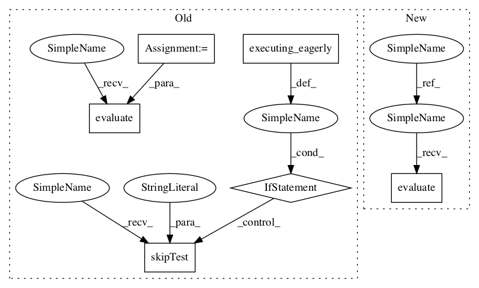

c611d9b6b35e44326bc18096dc57abe18eb6c90b,tf_agents/replay_buffers/tf_uniform_replay_buffer_test.py,TFUniformReplayBufferTest,testClear,#TFUniformReplayBufferTest#,116

Before Change
values_, sample_)
def testClear(self):
if tf.executing_eagerly():
self.skipTest("b/123886086")
batch_size = 1
spec = self._data_spec()
replay_buffer = tf_uniform_replay_buffer.TFUniformReplayBuffer(
spec, batch_size=batch_size, max_length=10)
values, add_op = _get_add_op(spec, replay_buffer, batch_size)
sample, _ = replay_buffer.get_next(sample_batch_size=3)
clear_op = replay_buffer.clear()
items_op = replay_buffer.gather_all()
last_id_op = replay_buffer._get_last_id()
self.evaluate(tf.compat.v1.global_variables_initializer())
last_id = self.evaluate(last_id_op)
empty_items = self.evaluate(items_op)
self.evaluate(add_op)
values_ = self.evaluate(values)
sample_ = self.evaluate(sample)
tf.nest.map_structure(lambda x, y: self._assertContains([x], list(y)),
values_, sample_)
After Change
tf.nest.map_structure(lambda x, y: self._assertContains([x], list(y)),
values_, sample_)
def testClear(self):
batch_size = 1
spec = self._data_spec()
replay_buffer = tf_uniform_replay_buffer.TFUniformReplayBuffer(
spec, batch_size=batch_size, max_length=10)
self.evaluate(tf.compat.v1.global_variables_initializer())
initial_id = self.evaluate(replay_buffer._get_last_id())
empty_items = self.evaluate(replay_buffer.gather_all())
values, _ = self.evaluate(_get_add_op(spec, replay_buffer, batch_size))
sample, _ = self.evaluate(replay_buffer.get_next(sample_batch_size=3))
tf.nest.map_structure(lambda x, y: self._assertContains([x], list(y)),
values, sample)
self.assertNotEqual(initial_id, self.evaluate(replay_buffer._get_last_id()))
In pattern: SUPERPATTERN
Frequency: 3
Non-data size: 6
Instances
Project Name: tensorflow/agents
Commit Name: c611d9b6b35e44326bc18096dc57abe18eb6c90b
Time:
Author: null
File Name: tf_agents/replay_buffers/tf_uniform_replay_buffer_test.py
Class Name: TFUniformReplayBufferTest
Method Name: testClear
Project Name: tensorflow/agents
Commit Name: c611d9b6b35e44326bc18096dc57abe18eb6c90b
Time:
Author: null
File Name: tf_agents/replay_buffers/tf_uniform_replay_buffer_test.py
Class Name: TFUniformReplayBufferTest
Method Name: testGatherAll
Project Name: tensorflow/agents
Commit Name: c611d9b6b35e44326bc18096dc57abe18eb6c90b
Time:
Author: null
File Name: tf_agents/replay_buffers/tf_uniform_replay_buffer_test.py
Class Name: TFUniformReplayBufferTest
Method Name: testClear
Project Name: tensorflow/agents
Commit Name: c611d9b6b35e44326bc18096dc57abe18eb6c90b
Time:
Author: null
File Name: tf_agents/replay_buffers/tf_uniform_replay_buffer_test.py
Class Name: TFUniformReplayBufferTest
Method Name: testGatherAllOverCapacity